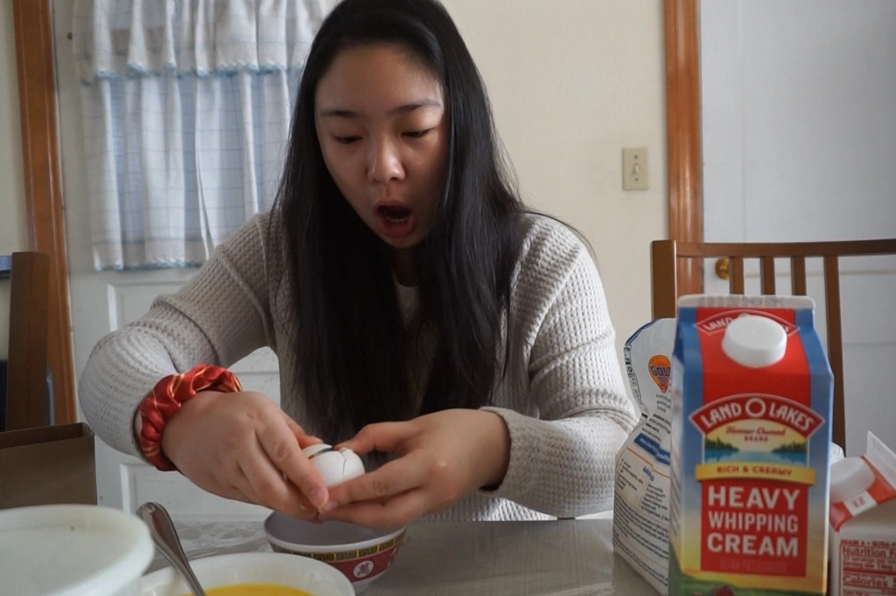
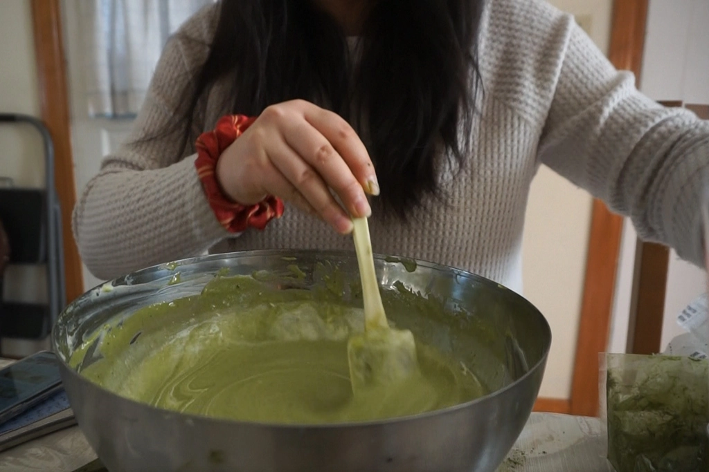
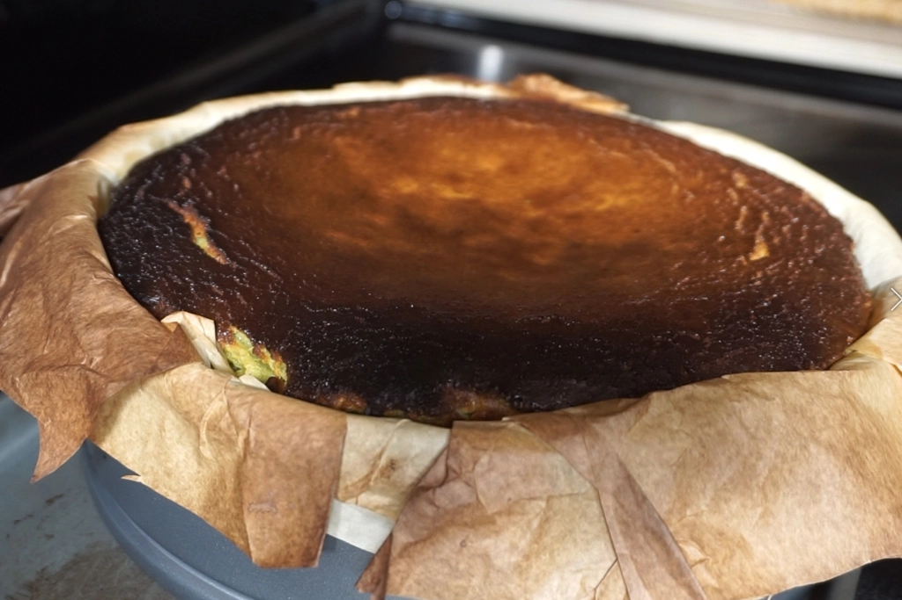
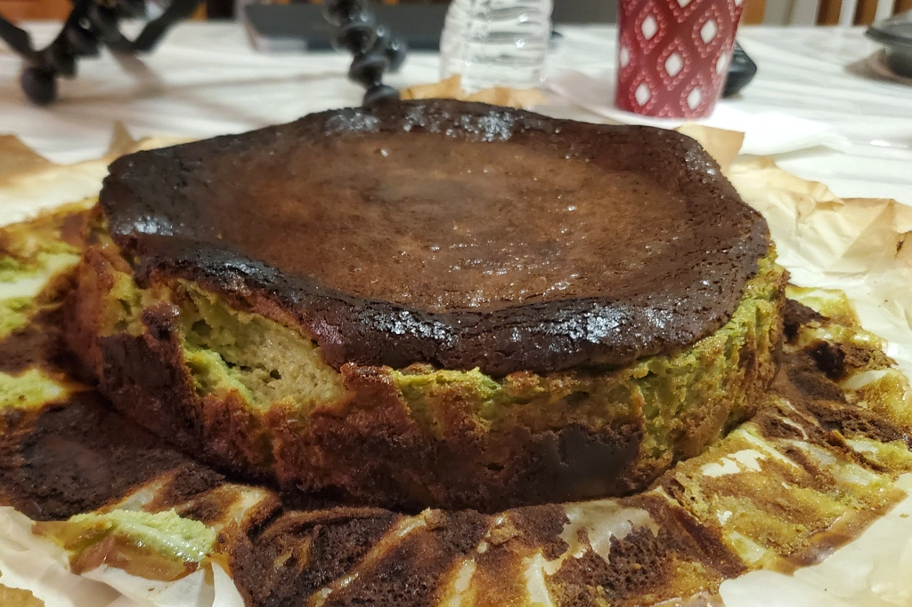

Matcha Basque Cheesecake
Jan 21 - Written by Bonnie
This week, the spatula/whisk/butter holder has taken on the ultimate challenge--baking on her own. I have voluntarily thrown myself into the midst of a baking challenge, a matcha basque burnt cheesecake.
If you have seen some of our previous blog posts you may already be familiar with our baking star, my other half, Emily, so you can probably guess that I typically leave all the baking to her and gladly take my place as sous chef or as we call it, spatula holder. But this week, I decided to give it a go myself!
Having both a love for cheesecake and matcha (I haven’t gotten enough of matcha even after a whole 24 days of it), I decided that a matcha cheesecake would be the perfect dessert. But of course I realized that I would challenge myself further and that’s when I discovered Basque Burnt Cheesecakes! Having never tried a basque burnt cheesecake and really not even sure where to buy one, I naturally decided that this would be the best opportunity for me to bake one!
I looked through some recipes online and then found out one of my favorite Japanese recipe blogs had a recipe for this--it was fate. Since the recipe that I did follow was Japanese based, it was noted that the cake itself may be less sweet and also slightly more light and fluffy compared to some other basque cheesecake recipes out there. And this time, for once, I read the recipe once before starting out on my baking journey. Even I surprised myself by how well I was following the recipe!
Since I could only find a 9 inch round cake pan, this recipe started getting a lot hard than I thought. The recipe I followed used a 6 inch cake pan that was common for Japanese cakes, but since I was having difficulty finding one in stores I decided it was time to take another route--multiply the whole recipe by 2.5. Who would’ve thought that that meant I’d find myself halfing egg yolks and cutting 1.25 lbs of cream cheese! Honestly, gathering ingredients itself was a wild ride.
Once everything is gathered, the recipe is relatively easy, its a repeated process of mixing, sifting, stirring until no lumps can be found. Except little did I know that eliminating lumps would really be such an arm workout, which is also why the recipe suggests that you wait until all your ingredients are cooled to room temperature before beginning--a tip I did end up following.
When your batter is smooth and silky, its only a matter of eliminating any air bubbles in the pan and most importantly, baking it for the right amount of time. Since a basque cheesecake was burnt at the top and ideally creamy inside, it can be really hard to judge when the cake is ready--that was the ultimate challenge. Especially since the cake pan that I had used was a different size and height, the cook time would end up differing from the one in the recipe, all I could do was watch and hope for the best. For reference, with a 9 inch round pan, I did end up baking the cake for around 50-55 minutes at 475 degrees to get the creamy but solid texture that I was going for. The great part about basque cheesecakes is that you can bake it for however long you wish to get the texture that you might want whether its gooey, creamy, or slightly more solid.
As my first time eating a basque cheesecake, I didn’t have one from a bakery to compare to but when I compared it to a regular cheesecake it was delicious. I would even say that this may be the cheesecake of cheesecakes for me! The basque cheesecake wasn’t as dense or overly sweet and was such a great balance between texture and flavors. I had originally been worried about the taste of burnt cake but I didn’t even taste it. Instead it brought a richer flavor to the matcha cake and added texture as well! Overall, such a delicious cake and an easy recipe for a lot of baking beginners to follow too!